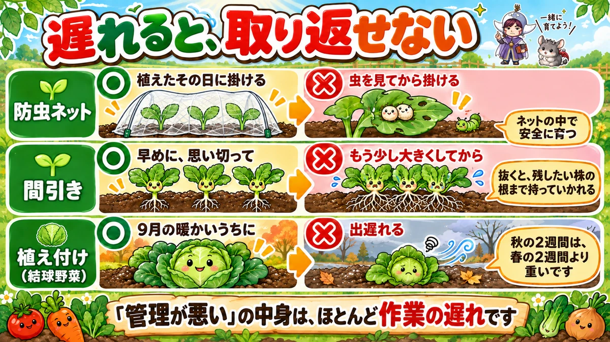
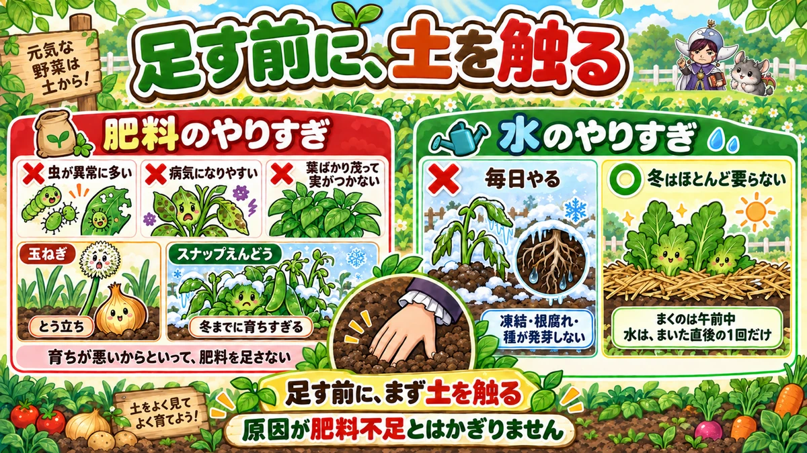

家庭菜園の失敗を見分ける｜虫・作業の遅れ・水と肥料の判断帳
どうも、8150（えいこう）です🌱 家庭菜園歴8年、理科の教員免許を持っていて、有機・無農薬で野菜を育てています。
📖 この記事の目次
この記事で分かること
- 育ちが止まったら、虫、作業の日付、場所、土の湿り、施肥の履歴を分けて確認します。
- 防虫ネットは植える準備とセットに。掛ける前の葉裏、掛けた後の裾と葉の接触も点検します。
- 間引きは残す株の間隔まで考える作業です。大きな苗を残すだけでは、混み合いが解消しない場合があります。
- 水や肥料には、足りないときと多すぎるときがあります。同じ『元気がない』でも、必要な対応は変わります。
- 植え時と水やりの回数は、野菜・季節・地域・地植えか容器かで決めます。別条件の数字をつぎはぎしません。
- 対処の前後を短く記録しておくと、次の栽培で変えることを一つに絞れます。
「小さいままやなあ。何か足したほうがええんかな」
野菜を見ると、ついそう考えたくなります。でも、最初に足したいのは水でも肥料でもなく、判断に使える情報です。土は乾いているのか。植えてから何日たったのか。新しい葉は出ているのか。これが分かれば、次の手を選びやすくなります。
このページは、家庭菜園を始めたみなさんが『いま何を見ればよいか』を調べるための判断帳です。虫の被害、間引きなどの遅れ、土と場所、水分と肥料の管理を扱います。特定の野菜の栽培暦ではないので、品種ごとの適期や株間は種袋の説明と組み合わせてください。
これから植えるなら『早見』から、すでに困った株があるなら『失敗の見分け方』から読めます。全部の対策を今日やらなくても大丈夫。原因の候補を一つ減らすだけでも、むやみに手を加えるより前へ進めます☺️
このページでいう『失敗』の範囲
葉に小さな穴があることと、株が育たなくなることは同じではありません。予定より小ぶりでも食べられる部分があれば、収穫の形を変えられます。見た目がきれいかどうかだけで合否を決めず、『これから育つ見込み』『食べられる健全な部分』『原因が広がっているか』を分けて見ます。
一方で、放っておけば自然に戻るとも限りません。小苗の中心を食べられた、混み合って伸びにくい、湿った土でしおれ続ける。こうした場面では、待つより確認が必要です。安心して育てることと、変化を見逃すことは別なんですよね。
失敗原因の全国共通ランキングは、ここでは使いません。順位を決めるより、自分の株に起きていることを見つけたほうが、今日の作業につながります。水を減らすべき株に、虫対策だけを追加しても困りごとは残ります。まず観察する場所をそろえましょう。
早見：初心者の失敗を防ぐ確認項目
数字は野菜ごとに、管理は条件ごとに
この回では、まき時・株間・肥料の量・収穫日数を、一つの共通値にはできません。大根とトマトを同じ間隔で育てるわけにはいかないですよね。早見では、数字そのものより『何の数字を確かめるか』を整理します。
- 種まき・植え付け：地域別の適期と品種を確認。秋の結球野菜には、9月の暖かい間に株を育てる説明と、虫の被害を避けるため10月ごろまで待つ説明があります。月だけで選ばず、収穫までの生育期間を見ます。
- 株間・うね幅：種袋や苗の栽培案内にある最終的な間隔を確認。発芽時の間隔を、収穫まで維持する間隔だと思わないことが大切です。
- 元肥：植える前に与える肥料です。前の作物への施肥も含め、すでに土に入っている量を確認します。何を使うかが決まってから、準備に必要な期間を予定に入れます。
- 追肥：栽培中に補う肥料です。野菜の生育段階、前回の施用、土の乾き方を確認し、一律の週数で全野菜に追加しません。
- 収穫までの日数：品種の目安と実際の生育を照合。植え遅れた日数を、そのまま収穫予定に足せば同じ大きさになるとは限りません。
- 連作の間隔：野菜の科、前に育てた作物、病気の履歴を確認。この材料だけで全野菜に共通する休作年数は決められないため、作物別の栽培案内で調べます。
植える前にそろえる5つの情報
- 育てる野菜と品種、その地域の適期が分かる
- その場所の日当たりと、雨の後の水の残り方を見た
- 前に育てた野菜と、入れた肥料を分かる範囲で書き出した
- 最後に残す株の間隔と、間引きを確認する段階を調べた
- 必要な虫対策を用意し、植えた日に設置できる
ここで全部に丸が付かなくても、買い物を増やす前に埋められる項目があります。朝と午後に場所を見る。前回の肥料の袋を確認する。苗の案内札を写真に残す。このくらいの準備が、後の『何を入れたんやったっけ』を減らしてくれます。
畑で見る順番を固定する
- 葉の表だけでなく、裏と中心の芽を見ます。
- 株の間隔と、隣の葉や雑草との重なりを見ます。
- 表面を少しよけ、根を傷めない場所で土の内部の湿りを確かめます。
- 新しい葉や茎の伸びを、前回の状態と比べます。
- 直近の雨、水やり、追肥、植え付けの日を見直します。
毎回見る順番が違うと、目立つ穴だけ見て土を忘れたり、土だけ見て虫を見落としたりします。『葉→間隔→土→生長→記録』のように順を持っておくと、慣れていない時期にも戻りやすいです。
水分管理の分かれ道
- 種をまいて発芽を待っている：種の周辺の乾燥を確認します。まだ深い場所の水を根で利用できる株ではありません。
- 苗を植えたばかり：苗の根の周囲が乾いていないかを確認。根が新しい土になじむ前と後を分けます。
- 根付いた露地の株：雨の履歴と土の内部を確認。地面の色だけで水やりを決めません。
- プランター：容器の中の湿り、排水口、受け皿を確認。畑で水を控える説明を、そのまま回数の規則にしません。
- 秋冬の被覆した畑：水分が残っているかを確認。頻繁な追加を避ける一方、長い無降雨や発芽前の乾燥を見落としません。
『毎日』や『週1回』は観察を始める目安にはなっても、土の確認を省く合図ではありません。昨日と同じ時刻でも、雨のあとと晴れが続いたあとでは、地下の状態が違います。
作業量も、最初に決めておく
育てる株を増やすと、収穫の楽しみも増えます。ただ、葉裏を調べる株、ネットを開閉する場所、間引きの日も一緒に増えます。植える面積だけを基準にすると、管理のほうが追いつかなくなるんですよね。
目安にしたいのは、普段の生活で確認できる量です。週末にしか行けない畑なら、苗を植えた日に防虫の設置まで終える。毎日見られるプランターでも、乾く速さの違う容器を混ぜたら個別に見る。このように、通い方まで計画に入れてください。
作業の手順（時期の順）
1 買う前に、育てる場所と期間を合わせる
- 庭、借りた畑、ベランダなど、育てる場所を決めます。
- 日が当たる時間帯と、雨の後に水がたまる場所を確認します。
- 育てたい野菜の適期、必要な広さ、収穫までの目安を調べます。
- その場所で管理できる株数に絞り、植え付けの日から準備を逆算します。
売り場に苗があることと、みなさんの場所で植えられることは別です。店の棚は全国共通の栽培カレンダーにはなりません。苗を見つけると「いける気がする！」となりますが、夜の冷え込みや秋の残りの暖かさを先に確かめたいところです。
秋の白菜やキャベツなどは、葉を増やす時間が足りないと、十分な玉にならないことがあります。遅れた分を肥料で取り返そうとしても、気温と日数を増やすことはできません。品種の適期から外れているなら、別の品種や小さく収穫する作物へ切り替えるほうが、計画を立てやすい場合があります。
条件の厳しい場所に短期間の葉物を選ぶ方法はあります。ただし、『小さく取るなら日陰でも必ず育つ』という意味ではありません。少ない日照で長く大株を育てる計画より、収穫の大きさと期間を控えめにして、実際の育ちを確かめる方法として考えます。
2 植える前に、土の履歴を整理する
- 前に何を育て、どんな肥料を入れたかを書き出します。
- 雨の後の湿りや、土の硬い層がないかを見ます。
- 育てる野菜に合う土の酸度を確認し、必要なら測定します。
- 入れる物と量、準備から植えるまでの期間を決めます。
- 土づくりと苗の購入を別日に予定し、植える直前に全部済ませる流れを避けます。
前の野菜がよく育った場所には、肥料分が残っている可能性があります。収穫したから土の栄養がゼロに戻るわけではありません。新しい袋の標準量だけを見るより、『前回入れた分の上に足す作業なのか』を先に確認します。
酸度の調整も、いつもの作業だからと繰り返さないことが大切です。野菜ごとの向き不向きと現在の状態を見てから判断します。測っていない酸度を、葉の色だけで高い・低いと決めることはできません。
排水を整えるときは、水がどこへ抜けるかまで見ます。うねを高くしても、周りに水がたまり続ければ問題が残る場合があります。根菜なら、根が伸びる場所の硬さも確認したいです。地上の広さと地下の育つ場所を、セットで用意します。
3 苗を選び、植える前に状態を確認する
- 中心に新しい葉があり、茎や根元に傷みがないか見ます。
- 葉の裏に虫や卵、目立つ食害がないか調べます。
- 容器の底や根鉢の状態を見て、長く置かれた苗ではないか確かめます。
- 苗の土の湿りを確認し、乾いた根鉢のまま植えることを避けます。
- 品種の案内にある間隔で植え、日付を記録します。
葉が大きい苗なら安心、とも限りません。狭い容器で長く育ち、根が回り過ぎた苗では、植え付け後の伸びが鈍ることがあります。見た目のボリュームだけで選ばず、中心と根元も見るのがコツです。
植えた直後の水分確保と、その後の毎日の水やりは別の判断です。最初に根の周囲へ水を行き渡らせることが必要な場面でも、土が湿った翌日に同じ量を追加する理由にはなりません。『植えた日だから』と『乾いたから』を分けて記録すると、後で判断を振り返れます。
4 虫対策は、設置前と設置後の二段階
- 苗や残っている葉に害虫がいないか確認します。
- 対象の葉物などに防虫ネットを設置します。
- 裾が浮いていないか、出入り口が閉じているか確かめます。
- 葉が網へ押し付けられない高さと広さを確保します。
- 開けて作業した後は、内側を見てから閉じ直します。
ネットは、外から来る虫を入りにくくするものです。内側に残った虫を消す働きはありません。掛ける前に確認する作業を抜かすと、『守ったはずの場所で虫が増えた』という困った形になりえます。
葉と網の距離は、植えた日に十分でも、株が大きくなると変わります。葉が触れている部分では、網越しの産卵などによって防ぎ切れない場合があります。成長に合わせて支え方を見直す作業も、ネット管理の一部です。
虫を見つけたときは、そこにいる虫すべてを害虫だと決めません。葉を食べている虫なのか、別の虫を食べる天敵なのかで役割が違います。分からない虫は写真と被害の様子を残して調べると、次に同じ姿を見たときにも判断しやすいです。
5 種まき後は、発芽と混み具合を別々に見る
- 種袋の深さと光の条件を確認してまきます。
- まいた場所の土と種が接するよう、作物に合う方法で表面を整えます。
- 発芽前は、種の周辺の湿りを確認します。
- 発芽したら、そろい方、傷み、株同士の距離を見ます。
- 間引きを行う段階と、最後に残す位置を確認します。
芽が出ないと、水不足に目が向きやすいです。でも、湿り過ぎ、温度、土をかぶせる深さ、発芽に光が必要かどうかなども関係します。『追加で水をまく』を最初の答えにせず、まいた条件を一つずつ見直してください。
発芽がそろったら、今度は全部を残したくなります。かわいい芽が並ぶので、気持ちは分かります。ただ、種を多めにまいた時点の株数と、収穫まで育てる株数は違います。予定の株間を確保する作業までが、種まきの続きです。
6 間引きは、残す位置を決めてから
- 生育がよく、傷みの少ない株を確認します。
- その株を残した場合に、隣との間隔が確保できるか見ます。
- 抜く株と残す株を決め、根が絡んでいないかを確かめます。
- 作物に合う方法で間引き、残す株が一緒に持ち上がらないよう注意します。
- 根元が不安定なら土を寄せ、作業後のしおれや倒れを見ます。
大きい順に残した結果、大きな株だけが一角に集まることがあります。それでは別の場所が空いていても、残した株は競合したままです。『立派な株を選ぶ』と『育つ空間を割り振る』を一緒に考えます。
遅れて根が絡んだ場合は、勢いよく引き抜かないでください。トウモロコシなど、残す根を傷めないため切って間引く方法が使われる作物もあります。どの野菜でも同じ抜き方で済ませず、対象の間引き方を確かめます。遅れを取り戻す場面ほど、ゆっくり手を入れたいところです。
7 追肥は、予定と株の状態を照合する
- その野菜の追肥の段階を確認します。
- 前回の肥料、施した日、量を見ます。
- 新しい葉や実の育ちと、土の水分を確かめます。
- 使う肥料の表示に従い、作物に合う量と位置を決めます。
- 葉や結球の内側へ入り込まないよう施し、記録します。
追肥を忘れたくないなら、予定を書くのは役立ちます。でも、予定の日だから必ず追加する、という使い方にはしません。すでに肥料を多く入れた株や、根が傷んだ株を、順調な株と同じに扱わないためです。
反対に、過剰を怖がるあまり必要な補給をずっと避けると、栄養が足りないまま収穫期を迎える場合があります。実を長く収穫する野菜では、生育段階に合う補給が必要です。『足す前に確かめる』は、何も与えないという意味ではないんですよね。

植え付け、間引き、追肥は、同じ『遅れ』でも取り戻し方が違います。植え時は季節と品種を、間引きは根と間隔を、追肥は前の施用と現在の生育を確認します。一つの対策でまとめて取り返そうとしないことが大切です。
8 収穫後に、次の栽培へ渡す記録を残す
- 食べられる部分と、傷んで使えない部分を分けて確認します。
- 気になった症状と、最初に見つけた時期を書きます。
- 実際に行った対策と、その後の変化を残します。
- 次回は何を一つ変えるか決めます。
記録は長い日記でなくて大丈夫です。『植えた日／症状に気づいた日／そのときの土／行った作業』があれば、記憶だけで考えるより比較できます。予定より小さかったとしても、虫を防げたのか、植え時が遅かったのかが分かれば、次の準備へつながります。
結果がよかった場合も、使った物が全部効いたと決めないことが大切です。天候や苗、場所も違うかもしれません。新しい資材を入れた年にうまく育ったからといって、その資材だけの効果が分かったわけではない。成功した年にも記録を残すと、思い込みで作業を増やさずに済みます。
失敗の見分け方（症状→原因→やること）
葉に穴が増える、中心が食べられている
- 症状：前回より穴が増えた、小さな苗の葉が大きく欠けた、中心の新しい葉が傷んでいる。
- 考えられる原因：葉を食べる虫がいる、掛ける前に卵や幼虫が入った、ネットの裾や開閉部分から侵入した。
- やること：葉裏、中心、地面に近い部分を見て、加害している虫を確認します。取り除いた後に、ネットの隙間と葉の接触を点検します。
古い穴が残っているだけなのか、食害がいま進んでいるのかを分けます。穴を塞ぐことはできませんが、新しい葉が育っていれば生長が続いている可能性があります。逆に、外側に緑が多くても中心が失われているなら、同じ回復を期待できるとは限りません。
虫食いだけで肥料過剰とは決めません。肥料の多さが生育や害虫被害に関わる場合はあっても、虫が入り込む道や時期もあります。まず目の前の虫と侵入口に対応し、そのうえで施肥の履歴を確認します。
防虫ネットの中なのに虫が見つかる
- 症状：覆ってある株で食害が続く、内側で幼虫や卵が見つかる。
- 考えられる原因：設置前からいた虫を閉じ込めた、裾が浮いた、作業で開けたときに入った、葉が網に接している。
- やること：『掛けたから大丈夫』をいったん外し、株とネットをそれぞれ調べます。虫を確認して除き、閉じ方と広さを直します。
内側で虫が育つと、外から入る天敵が限られる場合もあります。ネットを使うことと、内部の観察を省くことは別です。葉が混み合って奥が見えにくくなったら、のぞき込むだけでなく、作業できる時間に開けて確認します。終わった後に閉じ直すところまでが点検です。
ネットを外す方法にも、虫が新しく入る可能性があります。天敵を入れる目的だけで常時開けるのではなく、対象の害虫と野菜の状態に合わせて考えます。初心者のうちは、内側の虫の確認と、隙間をなくす作業を先に進めると判断しやすいです。
芽が出ない、発芽がまばらになる
- 症状：種袋の発芽目安を過ぎてもほとんど芽がない、列の一部だけ出ている。
- 考えられる原因：種の周囲が乾いた、湿り過ぎた、温度が合わない、覆う土の深さや光の条件が合っていない。
- やること：まいた日、深さ、雨や水やり、被覆の有無を確認します。次にまく場合は、疑う条件を一つずつ直します。
乾燥しているなら水分の確保が必要です。ただ、土の中が湿ったままなら、水を増やすことが答えとは限りません。芽が見えない段階では、根の張った株と同じ判断はできないので、種のある浅い部分の状態を見ます。
発芽しなかった列を何度も掘り返すと、出かかった芽を傷めることもあります。全体をかき回すより、端の一部を慎重に確認し、まき方の記録と照合します。『水が足りなかったはず』と決めて、次も同じ深さでまき直すのを避けたいです。
苗を植えた後から伸びない
- 症状：植える前と葉の数がほとんど変わらない、新しい葉が目立たない、しおれが続く。
- 考えられる原因：根鉢の乾燥、土の過湿、根の傷み、長く育苗したことによる根の回り過ぎ、温度や植え時の不適合。
- やること：植えた日と天候、根元付近の湿り、新しい葉の有無を確認します。肥料不足だけを候補にせず、植え付け条件を見直します。
苗がその土になじんで根を伸ばすことを『活着』といいます。この途中で育ちがゆっくりになることはありますが、しおれが続く場合は水分と根元を見てください。待てばよい時期と、確認が必要な変化を一緒に扱わないことが大切です。
ここで苗を毎回引き抜いて根を見ると、根付く途中の株に別の負担をかけます。まず地上と周囲の土から確認し、株を掘る必要があるかを考えます。確認のための作業が、次の不調の原因にならないようにしたいですね。
株が細いまま、同じ場所に密集している
- 症状：芽は多いのに一本ずつは小さい、葉が重なって中心が見えにくい、根菜が十分太らない。
- 考えられる原因：間引きの遅れ、残す位置の偏り、雑草との競合。日照や栄養、根の問題も候補です。
- やること：目標の株間と実際の間隔を比べます。間引きが必要なら、残す位置を先に決めて作物に合う方法で行います。
本数を数えるだけでは、混み具合が分かりません。十本あっても均等に並ぶ場合と、一か所に固まる場合では違います。残した株の周りに育つ空間があるかを見ます。
遅れた間引きの後、すぐ大きくならないからと追肥を重ねるのも避けたいです。根を動かした直後は、その影響も考えます。間隔を整えた日を記録し、その後の新しい葉や生長を確認してから次の手を選びます。
秋の白菜やキャベツが玉にならない
- 症状：葉はあるが巻きが進まない、小ぶりのまま寒い時期へ入った。
- 考えられる原因：植え付けが遅い、品種に合う生育期間が足りない、外葉や中心の食害、日当たりや根の不調。
- やること：植え付け日、品種、残っている葉と中心を確認。暖かい時期に十分育ったかを見て、玉を待つか、健全な葉を利用するか考えます。
葉を増やす時間が足りない問題と、虫で中心を傷めた問題では、残す株の見込みが違います。『巻かない』という結果だけから、同じ肥料を全株へ追加するのではなく、株ごとに確認します。
まだ健全な葉が利用できる場合と、腐敗している場合も分けてください。小さい収穫に切り替えることはできますが、傷んだ部分まで食べるという話ではありません。予定の形に固執せず、使える部分を見て収穫の目的を変える道があります。
葉や茎ばかり立派で、実の育ちが弱い
- 症状：葉の色が濃く、茎や葉がよく伸びる一方、実の付き方や肥大が思わしくない。
- 考えられる原因：肥料、とくに窒素が多い可能性。品種、生育段階、温度、光、受粉などの条件も確認が必要です。
- やること：過去の元肥と追肥を調べます。葉の見た目だけで確定せず、実や新しい葉の様子と照合し、根拠なく追加するのを止めます。
トマトなどでは、葉と茎の状態が過剰を疑う手がかりになります。けれど、濃い葉を一枚見つけたら即『肥料が多い』とは言えません。同じ品種の前の状態や、どの段階から変わったかが役立ちます。
窒素を控えるという説明も、どの野菜かで意味が変わります。サツマイモのつるばかり伸びる問題と、ジャガイモで必要な栄養が不足する問題を、『芋だから同じ』でまとめないことが大切です。
葉の色が薄く、生長も鈍い
- 症状：以前より葉の色が薄い、葉や茎の伸びが弱い、実を取る途中で勢いが落ちた。
- 考えられる原因：肥料不足、根が水や栄養を吸えない状態、低温や日照不足など。
- やること：土の湿りと根元の状態、収穫の進み方、施肥からの日数を確認。根と環境の問題を調べたうえで、必要な補給を検討します。
『足し過ぎを防ごう』という話を読むと、今度は足りない場合も我慢してしまうかもしれません。そこは逆に振り切らなくて大丈夫です。必要な栄養が足りないなら、適切な追肥は意味があります。先に候補を分けるのは、必要な作業まで止めないためでもあります。
新しい肥料を使った後、すぐ変わらなくても、その場でもう一回追加しないでください。効くまでの時間や土の条件が違います。前の作業を忘れて重ねると、遅れて効いてきたときに過剰になる可能性があります。
土は湿っているのに、株がしおれる
- 症状：水を与えても葉が戻らない、湿った状態が続く場所で株が弱る。
- 考えられる原因：過湿による根の不調、排水不良、根元の傷みや病気など。乾燥だけでは説明できない状態です。
- やること：追加の水をいったん控え、土の内部と水の出口を確認します。容器なら排水口と受け皿も見て、株の傷みの広がりを観察します。
しおれは、葉へ水が十分届いていないという手がかりになります。でも、水が土にないのか、土にあっても根が吸えないのかで対応が逆になります。湿った株にさらに水を入れる前に、その違いを確かめます。
水やりを一度試して戻らなかったから病名が決まるわけでもありません。肥料や薬剤を次々足すより、根元の変色や傷み、隣の株にも同じ症状があるか、いつから続くかを記録します。症状が広がる場合は、写真と経過をそろえて地域の栽培相談などで確認してください。
土の中まで乾き、葉がしおれている
- 症状：土の内部も乾いていて、葉がしおれる。暑い時期や容器で目立つ場合があります。
- 考えられる原因：水分不足、根が利用できる土の量が小さい、降雨が届かない場所、植え付け直後の乾燥。
- やること：乾燥を確認してから、根の周囲へ水が届くように与えます。その後の戻り方と、次に乾くまでの変化を見ます。
地表だけが白っぽくても、少し下に湿りが残ることがあります。逆に、表面を軽く濡らしただけで、その下は乾いたままの場合もあります。見た目だけで『水をあげたから大丈夫』とせず、必要な場所まで届いたかを考えます。
露地のキュウリに水を控える説明と、猛暑の乾燥時に水を与える説明は、ここで条件を合わせます。根付いているか、雨があったか、土の内部はどうか。水切れしている株まで、回数の決まりを優先して待たせないでください。
同じ場所だけ、毎回うまく育たない
- 症状：同じ区画で生長が弱い、雨の後に不調が出る、ほかの場所の同じ野菜と差が大きい。
- 考えられる原因：日照、排水、土の硬さ、前作や施肥の履歴など、場所に結び付く条件。
- やること：違う場所との管理の差を確認し、日が当たる時間と雨の後の状態を記録。次回は野菜の選び方や位置を見直します。
途中から変えられる条件もあります。プランターなら置く場所を検討でき、地面でも周囲の草や水の通り道を整えられる場合があります。ただ、大きな株を何度も移すことが安全とは限りません。いま動かせる部分と、次の作付けで変える部分を分けます。
土や場所の問題が疑われるなら、肥料の量を増やす前に、その場所の特徴を把握します。育ちが悪い場所へ毎年同じ追加をしていると、原因が残ったまま投入だけ増えてしまいます。場所の観察も、ちゃんと栽培作業なんですよね。

この図は過剰の可能性に気づく補助として使います。虫やしおれの見た目だけで原因を一つに決めず、上の『考えられる原因』と土・作業履歴を合わせて判断してください。
説明が分かれていること
水やりは毎日なのか、ほとんど不要なのか
『乾いた水好きの野菜には、毎日の水やりが必要になることもある』という説明があります。一方で、『雨がある露地で、苗が根付いた後は、むやみに水を追加しない』という説明もあります。
ここで回数だけを取り出すと、正反対に聞こえます。合わせたいのは、野菜の種類、暑さ、土の内部の水分、雨、植え付けからの段階です。容器の葉物と、根が伸びた露地の株では、使える土の量も違います。
どう考えればよいかというと、『毎日観察する』ことと『毎日同じ量を与える』ことを分けます。毎日見るのは役立ちますが、毎回乾いているとは限りません。必要なら毎日与える場面もあり、湿りが残れば見送る場面もある。回数は確認の結果として決まります。
冬の種まきは、一度の水で足りるのか
土を覆って水分を保てる秋冬の畑では、最初に水を与えた後、追加が少なくて済むという説明があります。覆わない栽培や乾きやすい容器では、発芽までの水分管理を続ける説明もあります。
『最初の一度だけ』を使うには、種の周りがその後も湿っているという条件が必要です。乾燥が続く場所や、雨が届かない場所にまで広げると、種が発芽に必要な水を得られない可能性があります。
どう考えればよいかというと、被覆の有無と発芽の段階を見ます。地表を覆うことには乾燥を抑える働きがありますが、覆っただけで土へ水が生まれるわけではありません。種の位置の湿りを確認し、必要な場合に補います。発芽前と根付いた後を、同じ回数で扱わないことが大切です。
秋は早く植えるのか、虫が減ってから植えるのか
結球野菜を暖かいうちに大きくする説明では、9月の生育を重視します。虫の被害を少なくするために植え時を後ろへずらす説明では、10月ごろの植え付けが示されています。
目的は、前者が玉を作るための時間確保、後者が害虫被害の回避です。早く植えれば虫への対応が必要になり、遅く植えれば十分育つ期間が短くなる可能性があります。両方の利点だけを取り出して『遅く植えて、大玉も確実』とはできません。
どう考えればよいかというと、まず地域と品種の適期を確認します。その範囲内で、ネットなどを使って虫に対応するのか、遅植えに合う品種や収穫の大きさを選ぶのかを考えます。別の地域の月を、そのまま自分の畑の締め切りにしないでください。
肥料を控えるのか、追肥をきちんと行うのか
肥料過剰を避ける説明では、前作から残った成分や、すでに与えた肥料を確認します。追肥を重視する説明では、実を取り続ける時期や、栄養が不足する場面の補給を考えます。
どちらも必要な場面があります。『初心者は入れ過ぎやすい』という注意を、『肥料不足は起こらない』という診断に変えないことが大切です。逆に、実のなる野菜だからという理由で、根の不調や湿り過ぎを確かめず追加しないようにします。
どう考えればよいかというと、量、時期、施す位置、土の状態を別々に見ます。量が適切でも、葉に付着するような施し方では傷みにつながる場合があります。遅れて効くものなら、追加の判断まで時間が必要です。『何をいつ、どこへ入れたか』がそろってから調整します。
芋を育てるなら、窒素は少ないほどよいのか
サツマイモでは、肥料を多くしてつるばかり伸ばすことへの注意があります。一方、ジャガイモでは窒素が足りないことも収量に影響し、必要な栄養を確保する説明があります。
これは同じ野菜について割れた説明というより、『芋』という呼び方で別の作物をまとめたときの混乱です。収穫する部分が地下にあることだけで、肥料の使い方まで同じにはなりません。
どう考えればよいかというと、野菜名まで戻って、その作物の元肥と追肥を確認します。サツマイモで控えめにする話にも生育段階があり、ジャガイモで栄養を確保する話にも過剰への注意があります。『必要か不要か』の二択にせず、量と時期の話として読みます。
虫が少なかった理由を、使った物で説明できるのか
混植や施肥の工夫の後に虫が少なかった事例はあります。ただ、その栽培で別の防除も行われていれば、混植や肥料だけで防げた結果とは言えません。薬剤を使った事例を、無農薬での成功例へ置き換えないことが大切です。
どう考えればよいかというと、『虫が少なかった』という結果と、『なぜ少なかったか』という説明を分けます。天候、時期、周囲の環境、防虫ネット、ほかの対策が違えば、原因は一つではないかもしれません。
初めて試す場合は、一度に多くを変え過ぎないほうが振り返りやすいです。ネットの閉じ方を直した年に、苗の種類と植え時と肥料も全部変えると、どの変更が役立ったか分からなくなります。まず確実に確認できる作業から整えます。
よくある質問
初心者は、何を一番先に直すとよいですか？
まず、いま被害や不調が進んでいるかを見ます。葉を食べている虫がいれば確認して対応し、土が湿っているのにしおれるなら追加の水を見送って排水を調べます。困った株がまだないなら、植え時と株間、植えた日の虫対策を先に準備してください。
小さい株には、とりあえず肥料を与えてよいですか？
大きさだけでは不足かどうかは分かりません。新しい葉が出ているか、土の水分は適切か、いつ植えたか、すでに何を入れたかを確認します。不足が考えられ、根や環境に問題がないことを確かめてから、作物に合う追肥を検討します。
肥料を入れ過ぎたかもしれません。水で流せばよいですか？
入れた物と量、畑か容器か、排水の状態が分からないまま大量に水を入れないでください。過湿という別の問題を増やす可能性があります。追加の施肥を止め、表示と履歴を確認し、症状が強い場合は写真と施用内容をそろえて相談します。
ネットを掛け忘れたら、もう意味はありませんか？
今からでも、新しい侵入を減らすために使えます。ただし、先に株の内側まで見て、すでにいる害虫を確認します。掛け遅れた分を帳消しにはできませんが、これからの被害を抑える作業はできます。
虫のいない苗なら、ネットは後日で大丈夫ですか？
葉を食べる虫が問題になる栽培では、苗の確認と設置を続けて行えるように準備します。いま見つからなくても、その後の侵入や産卵は起こりえます。ネットを買いに行く日と、苗を植える日が離れない段取りにすると安心です。
虫食いの葉は、全部取ったほうがよいですか？
穴があっても、健全な緑の部分は葉として働きます。見た目のために一度に多くを取り去らず、食害が進んでいるか、虫がいるかを確認してください。腐敗などの傷みと、小さな虫食いは分けて考えます。
間引き菜を残して、全部大きくできませんか？
必要な間隔が取れないままでは、残した株同士が競合します。小さく収穫する計画なら別ですが、大きな根や株を目指すなら最終の株間を確保します。間引き菜を利用する場合も、大きくなるまで待つことを優先し過ぎないでください。
間引きを忘れてしまいました。今から抜いてよいですか？
まず、残す位置と根の絡みを確認します。勢いよく抜くと隣の株を傷める可能性があるので、作物に合う方法を選びます。間引き後は根元の安定としおれを見て、追加の肥料をすぐ重ねないようにします。
雨が降った翌日も、水やりしたほうがよいですか？
雨が降ったという記録だけでは、根の周囲へ十分届いたかは分かりません。土の内部を確認し、湿りがあれば追加を見送ります。屋根の下のプランターなど、雨が届かない場合もあるため、実際の土で判断します。
葉が昼にしおれたら、すぐ水不足と考えてよいですか？
土の湿りと、涼しい時間の葉の状態も確認します。暑い時間の一場面だけでは、乾燥と根の不調を区別し切れません。土の内部まで乾いているのか、湿っていてもしおれが続くのかを分けて、対応を選びます。
プランターなら、畑より失敗が少ないですか？
置き場所を選びやすく、少数の株を観察しやすい利点があります。一方で、土の量が限られるため、乾燥や水の滞留への確認も必要です。排水口と受け皿、容器ごとの湿りを見て、露地の水やり回数をそのまま使わないでください。
日当たりの悪い場所は、使えませんか？
日照の程度と野菜の性質によります。小さく取る葉物を少量試す選択肢はありますが、短期間の野菜なら必ず育つとは言えません。まず日が当たる時間を記録し、期待する大きさと収穫までの期間を無理なく設定します。
予定より植え付けが遅れたら、追肥を増やせば追いつきますか？
肥料を増やしても、生育に必要な暖かい期間は増えません。とくに秋の結球野菜では、品種と残りの生育期間を見直します。小さく収穫する、適期に合う別の作物を選ぶなど、目標の変更も考えてください。
毎日畑へ行けないと、家庭菜園は難しいですか？
行ける頻度に合わせて量と作物を選べば、計画を立てやすくなります。植え付け日に虫対策まで終える、間引きを見る日を予定するなど、後回しにしやすい作業を先に組み込みます。植えられる数より、状態を確認できる数を基準にしてください。
記録には、何を書けば十分ですか？
野菜と品種、種まきや植え付けの日、施肥と水やり、気づいた症状を残します。『土が湿っていた』『新しい葉は出ていた』のような観察も役立ちます。写真を同じ向きから撮ると、穴が増えたのか、葉が育ったのかを比べやすいです。
学ぶ：野菜が育たなくなるしくみ🔬
根も呼吸するから、水が多ければ安心とはならない
根は水を吸うだけの管ではありません。生きた細胞があり、呼吸をしています。土の粒の間には水や空気が入る空間があり、その状態が根の働きに関わります。水が長くたまり、空気が届きにくくなると、根が正常に働きにくくなります。
ここが、水のやり過ぎを考えるときの出発点です。『植物に水は必要』は正しくても、『必要なら多いほどよい』にはなりません。根の周囲に水があることと、根が元気に水を吸えることは別だからです。
葉がしおれているのに土が湿っている場面では、根が水を利用できない可能性を考えます。水を増やす前に排水を見るのは、そのためです。土の内部の湿りを見る作業は、地上の症状から地下の条件を考える入口になります。
葉のしおれは、地下と地上の両方で起こる
葉からは水分が失われます。一方で、根は土から水を取り込みます。葉で失う水と、根から届く水の釣り合いが崩れると、葉の張りが弱くなることがあります。
乾いた土では、根が利用できる水が足りません。湿った土でも、根が傷んでいたり、十分な働きができなかったりすれば、葉への水の供給が追いつかない場合があります。同じしおれが、反対の土の状態で見られる理由です。
だから、しおれた葉を見たら、次に土を見ます。葉だけで水を増やすか減らすか決めない。これを覚えておくと、水やりの回数を暗記するより、条件の変化に対応しやすくなります。根が見えないからこそ、土と葉を一緒に観察するんですね。
土の表面と、根のある場所では乾き方が違う
土の上側は、日差しや風に直接さらされます。そのため、表面が乾いても内部には水分が残っている場合があります。逆に、少量の水で表面だけが濡れ、根の周囲までは十分に届かない場合もあります。
地表を覆うと、土から水分が失われる速さが変わります。秋冬と夏でも、蒸発しやすさは同じではありません。『昨日これだけ与えた』という記録に、被覆と天候の情報が必要なのは、そのためです。
確認するときは、株のすぐ横を深く掘って根を切るのではなく、根を傷めにくい場所で少しずつ見ます。手で触ったときの湿りや土のまとまり方を比べると、表面の色だけより情報が増えます。難しい計算を始める前に、実物の違いを見てみてください。
肥料があることと、吸収できることは別
栄養が足りないと生育へ影響しますが、土に成分があるだけで、必ず株へ届くわけではありません。水分と根の状態が適切でなければ、利用しにくくなる場合があります。
育ちが悪い株へ追加しても変わらないときに、さらに同じ作業を重ねると、原因を直さず量だけ増やすことになります。土の中の濃度が高くなれば、根が傷むなど、別の不調につながる可能性もあります。『入れた量』と『吸えた量』は同じではないんですよね。
量を判断するには、肥料の表示と施用履歴が必要です。袋が違えば、同じ重さを入れても同じ成分量とは限りません。種類ごとの詳しい処方は、この共通の判断帳で一つにまとめず、使う物の表示と対象の野菜の管理へ戻って確認します。
葉を育てることと、収穫部分を育てること
葉は光を受けて、植物の生長に使う材料を作ります。だから、葉を全部小さくすることが栽培の目的ではありません。ただ、収穫したいものが実や根、芋であれば、葉や茎の見た目だけでは成果を判断できません。
葉と茎が立派でも、実の育ちが弱い場合があります。逆に、葉の勢いが少し落ちることで、収穫を続けるための栄養不足に気づく場合もあります。どちらも『葉が多いか少ないか』だけでは決められず、その野菜が何を育てている段階かを見ます。
サツマイモとジャガイモで窒素の説明を分けるのも、作物の性質が違うからです。収穫する部分が似て見えても、同じ管理の式に入れない。野菜の名前と生育段階を確認するだけで、極端な『全部控える』『全部増やす』を避けやすくなります。
間引きは、一本に使える空間を増やす作業
苗が密集すると、葉を広げる場所、光、水分、栄養を近くの株と分け合うことになります。畑の端に余裕があっても、根元で株が重なっていれば、その場所の競合は残ります。
間引きで本数を減らすと、残す株が使える空間を確保しやすくなります。ただし、残す位置が偏ると効果が十分でない場合があります。大きな株だけを選ぶのではなく、隣との間隔も見る理由です。
遅れて根が絡み合えば、抜く作業そのものが残す株への負担になりえます。早めに確認することは、空間を整えるためだけでなく、作業による根の傷みを減らすためにも役立ちます。『もったいないから待つ』が、残したい株を育てにくくすることがあるんですね。
虫への対策は、『入れない』と『中に残さない』で考える
防虫ネットは外からの侵入を減らすための障壁です。裾や作業口が開けば、その部分が通り道になります。葉が網に接している部分では、虫の種類によっては網越しの産卵などを防ぎ切れない場合があります。
設置前に卵や幼虫が付いていれば、網の内側で育つ可能性があります。外から来る虫を防いでいても、内側の問題は残ります。『植えるときに掛ける』『掛ける前に見る』『掛けた後にも見る』を分けるのは、対象にしている場面が違うからです。
被覆した中では、外と温度や風の当たり方も変わります。ネットを使ったという事実だけで安全を決めず、内側の葉の変化を見ます。道具の有無より、道具が働ける状態を保っているかが大切です。
季節は、待っている間にも進む
生長の速さは温度などの環境に影響されます。秋に植える野菜では、同じ日数待っても、暖かい時期と冷え込んだ時期で同じだけ育つとは限りません。
植え付けが遅れたとき、収穫を同じ日数だけ遅らせれば元どおり、と考えにくい理由です。後ろにある期間が、同じ温度の期間とは限りません。肥料の量を増やしても、その季節の違いを埋められるわけではありません。
ただし、これを『秋の一週間は春の何週間分』という共通の換算にはできません。地域、品種、年の天候で違います。日付と実際の育ちを照合して、『いまの株に残された条件はどうか』を見るほうが役立ちます。
観察の記録は、小さな比較になる
対策前の葉と、数日後の新しい葉。雨が降る前の土と、翌日の内部の湿り。同じ場所を比べると、変化が見えてきます。家庭菜園の記録は、立派な研究ノートでなくても、判断を助ける比較になります。
ただ、一つの作業の後によくなっただけで、その作業が唯一の原因とまでは言えません。気温や雨も変わった可能性があります。複数の作業を同時にした場合には、どれが役立ったかも分けにくくなります。
まず、『何を見た』『何をした』『その後どうなった』を別に書いてみてください。見たことと想像した原因が混ざらなくなります。理科の面白さって、ここからなんですよね。実物を見ると「思ってたのと違うな」があり、その違いが次の工夫につながります🔬
まとめ
家庭菜園のつまずきは、虫、作業の遅れ、場所と土、水分、肥料を分けると、確かめる順番が見えてきます。水と肥料は、少な過ぎても多過ぎても問題になります。『元気がないから追加』の前に、株と土と記録をそろえましょう。
これから始めるみなさんは、次の準備をしてみてください。
- 品種と地域の適期、収穫までの期間を確認する
- 日当たりと雨の後の排水、前作の履歴を見る
- 最終の株間を調べ、間引きを確認する日を決める
- 植え付けと必要な虫対策を、同じ日の作業として用意する
育てている途中で困った場合は、この順で確かめます。
- 新しい食害があるか、中心の芽が育っているかを見ます。
- 株の間隔と、植え付けや間引きの日付を確認します。
- 土の内部の湿りと、水の出口を調べます。
- 前に施した肥料と、現在の生育段階を照合します。
- 原因の候補に合う対応を選び、変化を記録します。
ネットは裾と葉の距離まで見る。間引きは本数と残す位置を合わせて考える。水やりは露地と容器、発芽前と根付いた後を分ける。このように、ひとつの作業の中にも確認する場面があります。
予定どおりの大きさでなくても、健全な部分を収穫できるなら、楽しみ方を変えられます。原因が分かったなら、次の栽培で変えることも見つかります。失敗したから全部やり直し、という話ではありません。
ここまで読んでくださって、ありがとうございます。今日ひとつだけやるなら、気になる株の葉裏を見たあと、土の表面を少しよけて湿りを確かめてみてください。『葉はこう、土はこうやな』と分けて見られたら、それだけで次の判断が具体的になります。焦らず、見えることから進めていきましょう☺️
防虫ネット
初心者の失敗でいちばん多いのが「虫にやられた」です。これ1つで大半は防げます。
![[商品価格に関しましては、リンクが作成された時点と現時点で情報が変更されている場合がございます。]](https://hbb.afl.rakuten.co.jp/hgb/56bc205d.0066fedc.56bc205e.af56d163/?me_id=1260467&item_id=10000299&pc=https%3A%2F%2Fthumbnail.image.rakuten.co.jp%2F%400_mall%2Fmarsol-morishita%2Fcabinet%2Fshouhinn%2Fbouchuu%2Fimgrc0090950099.jpg%3F_ex%3D240x240&s=240x240&t=picttext "[商品価格に関しましては、リンクが作成された時点と現時点で情報が変更されている場合がございます。]")

不織布
まいた種が出ない、という失敗の多くは乾燥です。かけておくだけで発芽率が変わります。
![[商品価格に関しましては、リンクが作成された時点と現時点で情報が変更されている場合がございます。]](https://hbb.afl.rakuten.co.jp/hgb/56bc237a.e97551b1.56bc237b.2513ed10/?me_id=1310260&item_id=10000879&pc=https%3A%2F%2Fthumbnail.image.rakuten.co.jp%2F%400_mall%2Fdiokasei%2Fcabinet%2F007fusyokufu%2F12g%2Fimgrc0092049705.jpg%3F_ex%3D240x240&s=240x240&t=picttext "[商品価格に関しましては、リンクが作成された時点と現時点で情報が変更されている場合がございます。]")
苦土石灰
土が酸性に寄っていると、どれだけ丁寧にやっても育ちません。最初に一度整えておきます。
![[商品価格に関しましては、リンクが作成された時点と現時点で情報が変更されている場合がございます。]](https://hbb.afl.rakuten.co.jp/hgb/55e75fe5.20db4cd1.55e75fe7.d1ec32cc/?me_id=1194164&item_id=10000709&pc=https%3A%2F%2Fthumbnail.image.rakuten.co.jp%2F%400_mall%2Fgardening%2Fcabinet%2Fikou_20091001_001%2Fimg1043676078.jpg%3F_ex%3D240x240&s=240x240&t=picttext "[商品価格に関しましては、リンクが作成された時点と現時点で情報が変更されている場合がございます。]")